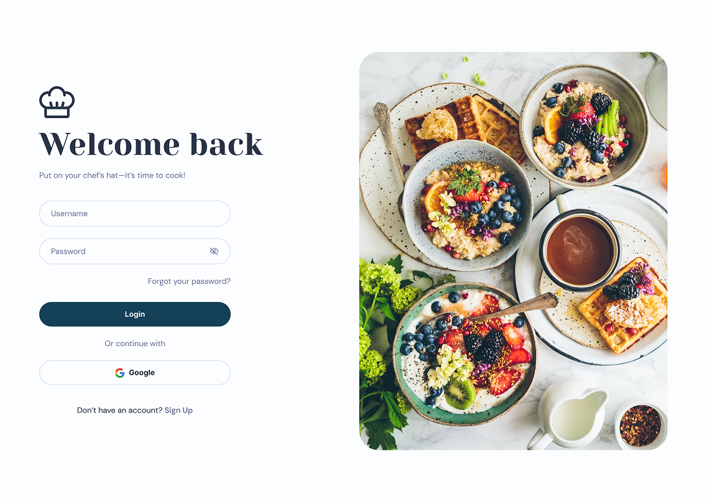
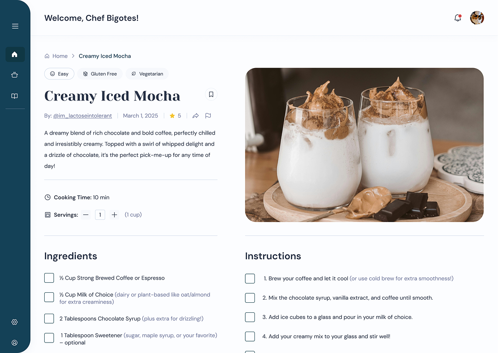

Through user research, we found that many people struggle to find recipes that match their preferences and keep track of favorites, making meal planning overwhelming. Chefcitos addresses this by encouraging recipe sharing and building a supportive community that makes cooking more enjoyable and sustainable.
As design lead, I shaped the product from concept to implementation by defining the visual identity,
designing key flows and reusable components, and creating a comprehensive design system.
In addition to design, I collaborated on the front-end development by building components in Angular,
implementing selected screens, and supporting testing and iteration to ensure design fidelity and usability.
The final product delivered a cohesive, friendly experience that simplified recipe discovery and meal planning. Users could easily explore content, save favorites, and feel inspired to cook more confidently, while the design system provided a strong foundation for ongoing development.

